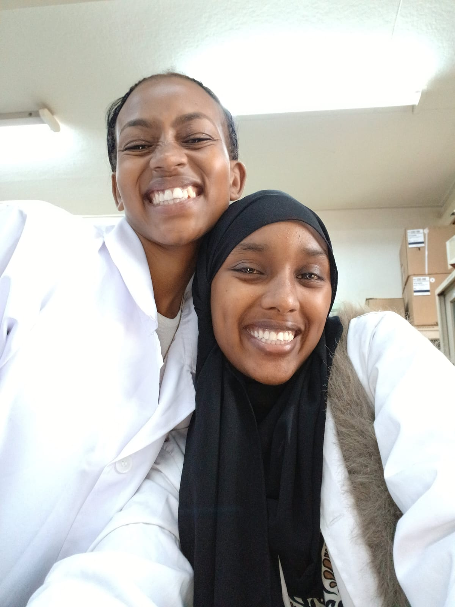

Academic Journey

My academic journey is helping me understand the relationship between people, ecosystems and the environment, while preparing me for a career in environmental management.
EDUCATION
SKILLS AND COMPETENCIES
Research Interests
I am interested in research and practical learning that can support environmental protection, biodiversity and community wellbeing.
- Biodiversity conservation and wildlife protection.
- Ecosystem health, restoration and sustainable management.
- Environmental pollution, waste management and pollution prevention.
- Climate change, adaptation and community resilience.
- Water resources, water quality and catchment protection.
- Community participation in environmental conservation.
Fun fact: I enjoy nature walks and discovering new places, especially environments with interesting landscapes and wildlife.